치아미백
웃는 얼굴을 더 환하게, 온새치과 치아 미백 치료
치아 색은 웃는 모습은 물론, 얼굴 전체의 인상까지 바꿉니다.
밝고 깨끗한 치아는 얼굴을 더 생기 있어 보이게 하고, 건강하고 단정한 인상을 만들어 줍니다.
온새치과는 누렇게 변한 치아뿐 아니라 어두워진 잇몸과 신경치료한 치아까지 안전하게 밝혀 드립니다.
무조건 하얗게 만드는 것이 아니라, 얼굴에 어울리는 밝기로 자연스러운 미소를 되찾아 드립니다.
치아 상태를 먼저 꼼꼼히 확인한 뒤 한 분께 맞는 미백 방법과 농도를 정해, 시린 증상은 줄이고 효과는 빠르게 보실 수 있습니다.
미백이 끝난 뒤에도 밝아진 색을 오래 지킬 수 있도록 생활 속 관리 방법까지 함께 알려 드립니다.
치아 색이 조금 밝아지는 것만으로도 웃는 일이 편해지고 일상이 달라집니다.
온새치과가 그 변화를 함께 시작하겠습니다.
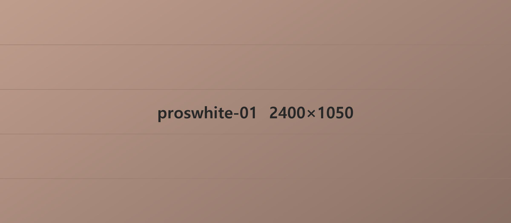
치아 변색의 원인
치아 색이 변하는 이유는 여러 가지지만 크게 바깥에서 오는 원인과 안에서 오는 원인으로 나눌 수 있습니다.
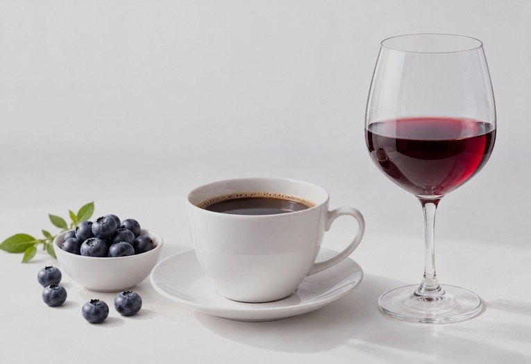
음식 및 음료
음주 및 흡연
치아 외상
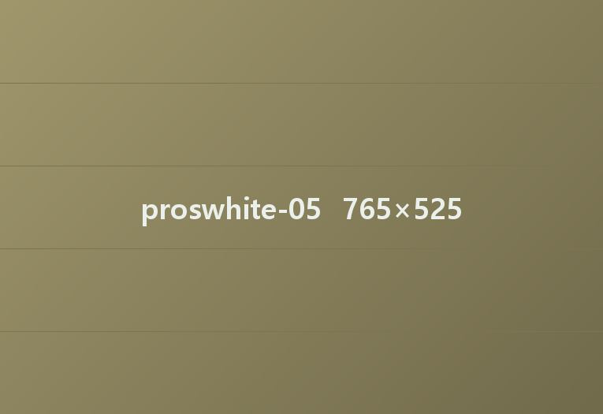
노화
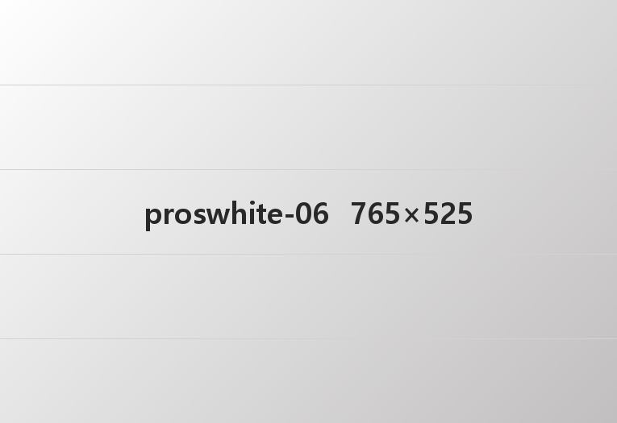
과도한 치태와 세균
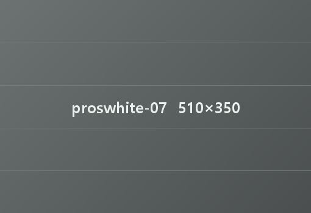
약물의 영향
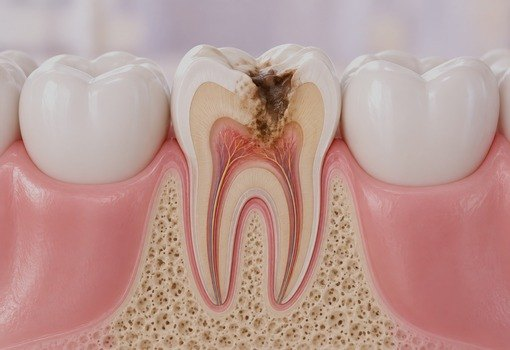
치아 내부 오염
호르몬 변화
온새 치아미백은
어떤 사람이 하면 좋을까?
01
타고난 치아 색이 누런 편인 분
02
교정을 마치고 더 깨끗한 치아를 원하시는 분
03
커피·차·담배처럼 생활 습관으로 치아가 변한 분
04
결혼, 면접 같은 중요한 날을 앞두신 분
온새 치아 미백치료의 종류
온새치과는 치아 상태에 맞는 미백 방법으로, 변한 치아와 신경치료한 치아까지 안전하고 효과적으로 밝혀 드립니다.
실활치 미백이란?
실활치 미백은 신경이 죽어 어둡게 변한 치아를 안쪽에서부터 밝히는 미백 치료입니다.
신경이 죽은 치아는 시간이 지나면서 회색이나 갈색으로 변하기 쉽고, 겉에서 하는 미백으로는 잘 밝아지지 않습니다.
온새치과에서는 치아 안쪽에 미백제를 넣어 안전하고 효과적으로 색을 밝히는 치료를 진행합니다.
치아 색을 되찾고 미소에 자신감을 더하는 방법, 온새치과에서 상담해 보세요.
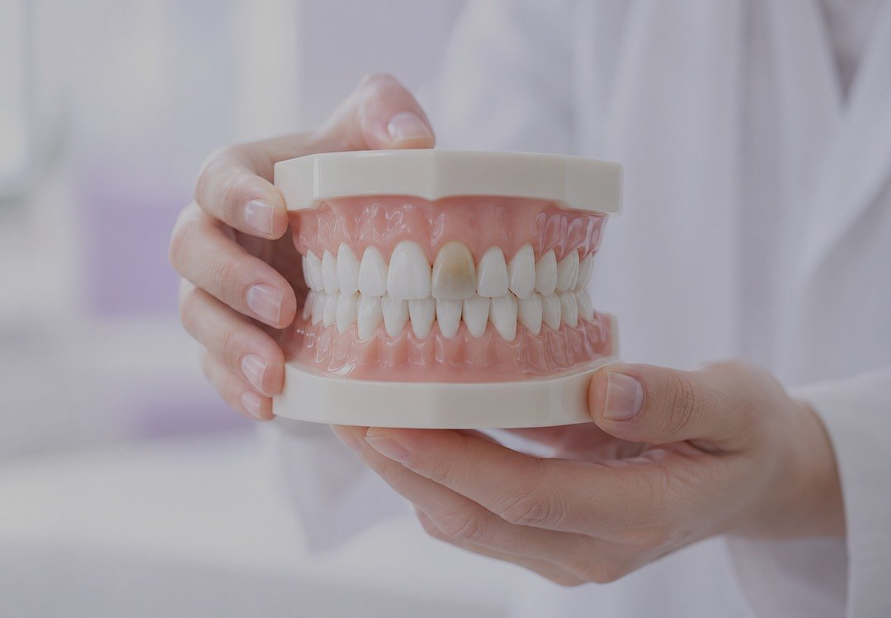
실활치 미백이 필요한 경우
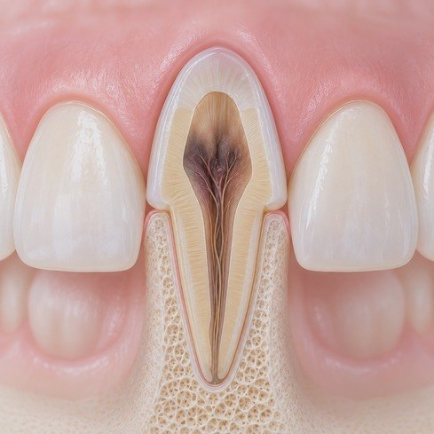
치아 속 신경(치수)이 죽거나 다쳐서 치아 색이 점점 어두워지거나 누렇게 변한 경우
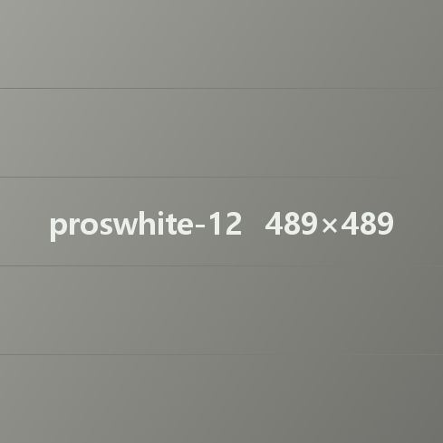
신경치료(근관치료)를 받은 뒤 치아 색이 변해 신경 쓰이는 경우
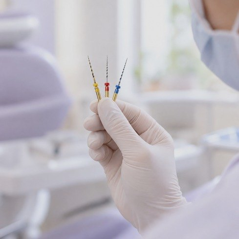
넘어지거나 부딪쳐 치아 신경이 다쳐서 색이 변한 경우
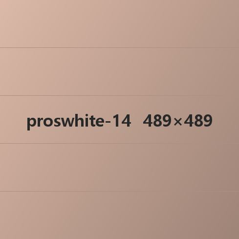
오래전에 받은 충치 치료나 다른 치료 때문에 치아 안쪽 색이 변한 경우
실활치 미백 치료과정
STEP 01.
정확한 진단
치아 색과 변한 원인, 입안 건강 상태를 살펴본 뒤 기대하시는 밝기와 실제로 가능한 범위를 설명드립니다.STEP 02.
근관치료(신경치료)
염증이 생긴 신경 조직을 없애고 안쪽을 소독한 뒤 신경관을 채웁니다.STEP 03.
충전물 일부 제거와 미백 준비
치아 안쪽 충전물을 조금 덜어 내어 미백제를 넣을 자리를 만듭니다.STEP 04.
미백제 넣기와 임시 충전
치아 안쪽에 미백제를 넣고 임시로 막아 둔 뒤 색이 바뀌는지 봅니다.STEP 05.
미백 반복과 마무리 충전
원하는 밝기가 나올 때까지 미백을 몇 번 되풀이하며(1~3회, 치아 색에 따라 조정), 미백이 끝나면 치아 안쪽을 단단하게 다시 채워 치료를 마무리합니다.시술 후 주의사항
치아에 색이 배기 쉬운 음식과 흡연은 당분간 피해 주세요.
특히 커피, 와인, 간장처럼 색이 진한 음식은 미백 효과를 떨어뜨릴 수 있습니다.
자극적인 음식은 피하고, 부드러운 식사를 권합니다.
치료 직후에는 치아가 잠시 예민해질 수 있으니 너무 뜨겁거나 찬 음식은 피해 주세요.
정해진 날짜의 관리와 점검이 필요합니다.
미백 뒤 안쪽 충전 상태와 색이 잘 유지되는지 확인하려면 정기 검진을 꼭 받으셔야 합니다.
※ 환자분의 치아 상태에 따라 치료 횟수나 치아 색을 밝히는 방법은 서로 달라질 수 있습니다.
온새 전문가 미백
밝은 미소에 전문의의 꼼꼼함을 더합니다.
온새치과의 전문가 미백은 치아 건강을 지키면서, 더 안전하고 효과적으로 밝은 치아를 만들어 드립니다.
집에서 쓰는 미백 제품과 달리, 전문가 미백은 치아 상태를 먼저 꼼꼼히 확인한 뒤 한 분께 가장 알맞은
미백제 농도와 방법을 골라 진행합니다. 색이 변한 원인부터 치아가 시린 정도까지 따져
진행하기 때문에, 더 빠르고 고르게 밝아지는 결과를 기대하실 수 있습니다.
건강한 밝기, 자신 있는 미소. 온새치과의 전문가 미백은 단순히 꾸미는 일이 아니라,
매일의 웃음을 더 편하게 만드는 선택입니다.
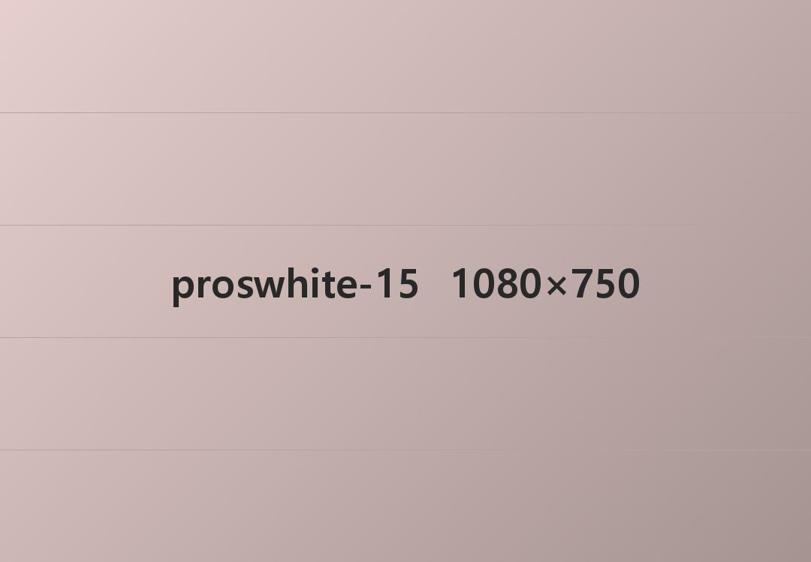
전문가 미백이 필요한 경우
커피나 차, 음식, 담배 때문에
치아 색이 변한 경우
예전 미백으로 효과가 없었거나, 효과가 적어 원하는 결과를
얻지 못한 경우
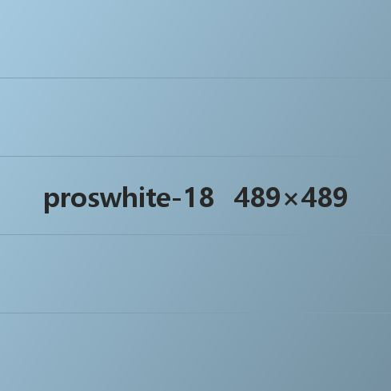
치아 속 신경이 죽었거나 다쳤을 때, 또는 신경치료 뒤에 생긴 변색처럼 일반 미백 제품으로 해결하기 어려운 경우
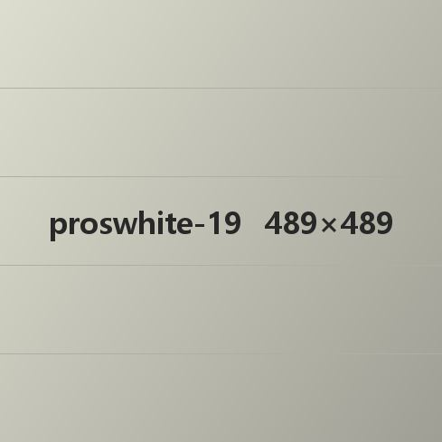
중요한 일정이나 특별한 날을 앞두고 빠르고 확실한 미백 효과를 원하는 경우
전문가 미백 치료과정
STEP 01.
정밀 진단과 상담
치아 색과 변한 원인, 입안 건강 상태를 살펴본 뒤 기대하시는 밝기와 실제로 가능한 범위를 설명드립니다.STEP 02.
치석 제거와 입안 정리
미백 효과를 높이기 위해 먼저 스케일링 같은 기본 관리를 합니다.STEP 03.
잇몸 보호제 바르기
미백제가 잇몸에 닿지 않도록 보호하는 막을 바릅니다.STEP 04.
미백제 바르기와 빛 쬐기
치아 표면에 미백제를 바른 뒤 특수한 빛을 쬐어 색을 밝히며, 필요하면 2~3회 되풀이합니다.STEP 05.
치료 뒤 상태 확인과 상담
밝아진 정도와 만족하시는지를 함께 확인하고, 시린 증상이 생기면 줄이는 방법을 알려 드립니다.STEP 06.
사후 관리 안내
밝아진 색을 오래 지키기 위한 식습관과 생활 습관, 추가 미백 계획까지 알려 드립니다.시술 후 주의사항
색이 진한 음식은 당분간 피해 주세요.
커피, 홍차, 와인, 콜라, 간장, 카레 같은 음식은 1~2일 동안 삼가시는 것이 좋습니다.
흡연은 되도록 피해 주세요.
밝아진 색이 오래가는지에 큰 영향을 주므로 금연을 권해 드립니다.
치아가 시릴 수 있습니다.
잠깐 시린 것은 자연스러운 반응이며, 대부분 하루 안에 가라앉습니다.
너무 차거나 뜨거운 음식은 피해주세요.
치아가 예민해진 상태이므로 자극이 적은 음식이 좋습니다.
정해진 날짜의 관리와 점검이 중요합니다.
밝아진 색을 오래 지키려면 온새치과의 사후 관리 일정에 맞춰 함께 점검하세요.
※ 온새치과는 미백이 끝난 뒤에도 한 분 한 분의 미소를 끝까지 지켜 드립니다.
온새 자가미백
자가미백은 내 치아 모양에 꼭 맞게 만든 미백 트레이에 미백제를 넣어, 집에서 간편하게 끼우는
방법입니다. 보통 2~4주 동안 꾸준히 쓰며, 변한 정도에 따라 치아가 서서히 밝아집니다. 자극이 적고 일상 속에서 부담 없이 할 수 있어 바쁜 분들께도 잘 맞는 방법입니다.
또 전문가 미백과 함께 하면 더 빠르고 고르게 밝아지고, 밝아진 치아 색을
더 오래 지키는 데도 도움이 됩니다. 온새치과는 자가미백 전에도 치아 상태를 정확히 진단하고,
안전하게 미백하실 수 있도록 한 분께 맞는 사용법과 주의사항까지 꼼꼼하게 알려 드립니다.
자가 미백이 필요한 경우
커피나 차 같은 생활 습관으로
치아 색이 변한 경우
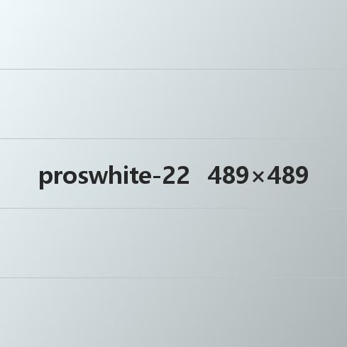
치아 전체가 어두운 편이라
한 톤 밝히고 싶은 경우
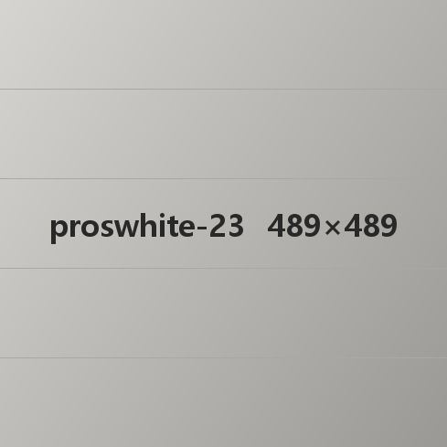
한 번에 바꾸기보다 부담 없이
천천히 밝히고 싶은 경우
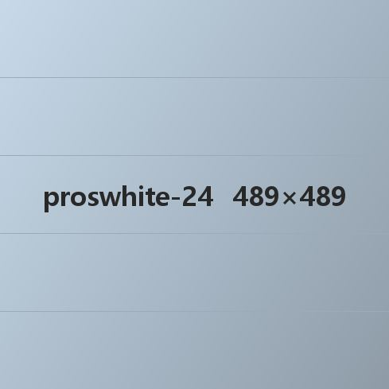
전문가 미백 뒤 밝아진 색을
오래 지키고 싶은 경우
일정이 바빠 치과에 자주 오시기
어려운 경우
자가 미백 치료과정
STEP 01.
정밀 진단과 상담
치아 색이 변한 원인과 상태를 정확히 살펴본 뒤, 자가미백이 맞는지 판단하고 한 분께 맞는 계획을 세웁니다.STEP 02.
나만의 미백 트레이 만들기
치아 모양에 맞춘 전용 트레이를 만들고, 잘 밀착되면서도 편하게 끼울 수 있도록 한 분께 맞춰 설계합니다.STEP 03.
자가미백제와 사용법 안내
미백제 양과 끼우는 시간 같은 안전한 사용법을 알려 드리고, 일상 속에서 쉽게 이어 가실 수 있는 일정을 함께 정합니다.STEP 04.
자가미백 시작(약 2~4주)
집에서 매일 또는 이틀에 한 번 트레이에 미백제를 넣어 끼우며, 서서히 밝아지는 것을 확인하실 수 있습니다.STEP 05.
중간 점검과 마지막 결과 확인
필요하면 중간에 한 번 오셔서 색이 바뀐 정도를 보고 미백제를 조정합니다. 원하는 색이 나오면 그 뒤의 관리 방법을 알려 드립니다.시술 후 주의사항
미백제는 안내받은 양만큼만 정확하게 쓰는 것이 중요합니다.
너무 많이 쓰면 치아나 잇몸이 자극을 받을 수 있으니, 정해 드린 양을 꼭 지켜 주세요.
너무 차거나 뜨거운 음식은 피해주세요.
치아가 예민해진 상태이므로 자극이 적은 음식이 좋습니다.
색이 진한 음식은 당분간 피해 주세요.
커피, 홍차, 와인, 콜라, 간장, 카레 같은 음식은 1~2일 동안 삼가시는 것이 좋습니다.
미백 뒤에는 치아가 잠시 예민해질 수 있습니다.
치아에 세게 힘을 주지 말고, 부드러운 칫솔로 치아를 아껴 주시는 것이 좋습니다.
※ 온새치과는 자가미백 전 과정에서도 안전과 효과를 가장 먼저 생각합니다. 꼼꼼한 안내와 사후 관리까지 믿고 맡겨 주세요.
잇몸 미백이란?
잇몸의 멜라닌 색소를 없애 검게 변한 잇몸을 건강한 분홍빛 잇몸으로 되돌려 주는 치료입니다.
레이저로 멜라닌이 쌓인 잇몸 겉면을 얇게 걷어 내고, 그 아래의 건강한 잇몸이
드러나게 하는 방법으로, 치료 뒤 1~2주 정도의 회복 기간이 필요합니다.
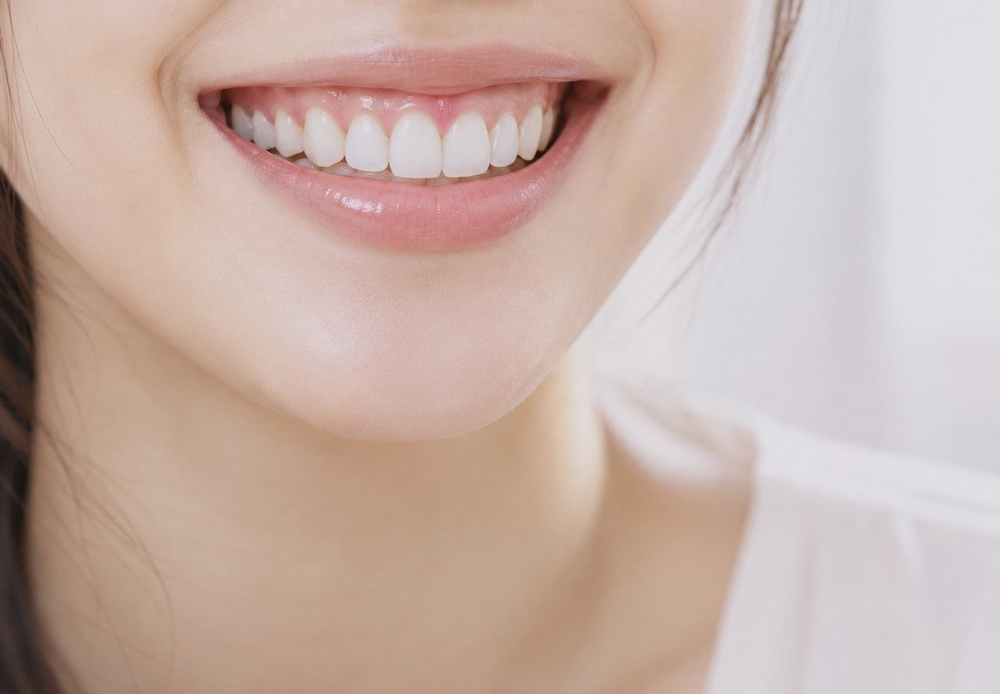
잇몸 미백이 필요한 경우
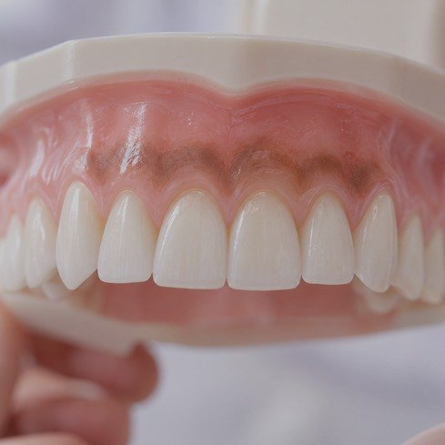
멜라닌 색소 때문에 잇몸이
검게 변한 경우
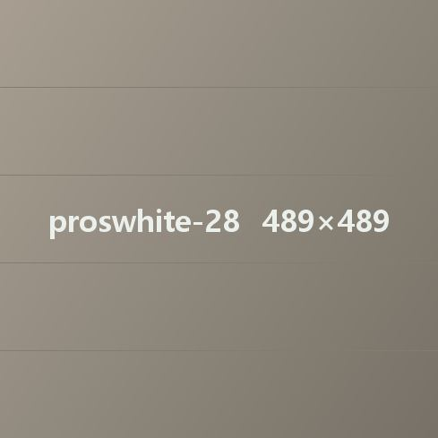
흡연 때문에 잇몸이
검게 변한 경우
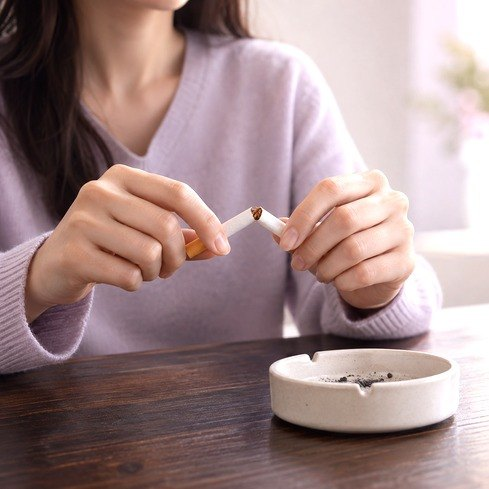
커피나 차를 많이 마셔서
잇몸이 착색된 경우
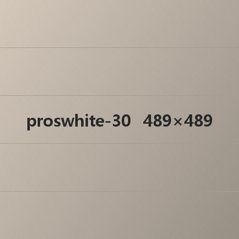
타고난 체질이나 나이 때문에
잇몸 색이 변한 경우
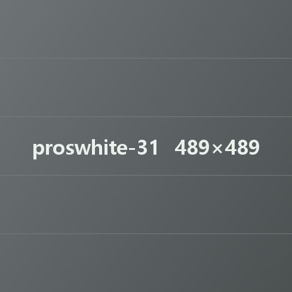
특정 약이나 항생제를 오래 먹어 잇몸 색이 변한 경우
잇몸 미백 치료과정
STEP 01.
첫 상담과 진단
잇몸 색이 변한 원인과 범위를 확인한 뒤, 미백할 부위와 기대할 수 있는 효과를 설명드립니다.STEP 02.
잇몸 상태 확인과 치료 준비
피가 나거나 염증이 있는지 잇몸 건강을 먼저 확인한 뒤, 치료할 부위를 마취해 통증을 줄입니다.STEP 03.
레이저로 잇몸 겉면의 색소 없애기
멜라닌 색소가 쌓인 잇몸 겉면에 약한 출력의 레이저를 쬐어, 잇몸 표면의 색소를 없앱니다.STEP 04.
치료 뒤 상태 확인과 회복 안내
치료한 부위를 확인한 뒤 진정 치료를 하고, 치료 뒤 주의사항과 회복 관리를 알려 드립니다.STEP 05.
경과 확인과 필요할 때 추가 치료
보통 1~2회면 충분하지만, 색소가 쌓인 정도에 따라 더 할 수 있습니다. 자연스러운 색이 오래가도록 정해진 날짜에 점검받으시길 권해 드립니다.시술 후 주의사항
자극적인 음식은 피해 주세요.
매운 음식, 뜨겁거나 딱딱한 음식은 잠시 잇몸을 자극할 수 있으니 1~2일 동안은 피하시는 것이 좋습니다.
흡연은 적어도 3~5일 동안 멈춰 주세요.
흡연은 잇몸 색을 다시 어둡게 만들고 회복을 늦출 수 있습니다.
칫솔질은 부드럽게, 자극 없이 해 주세요.
치료한 부위를 세게 문지르지 않도록 조심하셔야 합니다.
가볍게 시리거나 붉어지는 것은 자연스러운 반응입니다.
대부분 1~3일 안에 가라앉으며, 증상이 심하면 치과로 연락 주세요.
경과를 보러 한 번 더 오시길 권해 드립니다.
치료한 부위가 잘 아물었는지, 밝아진 색이 유지되는지 확인하려면 정기 점검이 필요합니다.
※ 잇몸 미백 뒤에는 잇몸이 예민해질 수 있으니, 주의사항을 잘 지켜 주시면 더 빠르고 편하게 회복됩니다.
치아미백 자주 묻는 Q&A
치아미백은 몇 번 받아야 하나요?
치아 상태와 원하는 밝기에 따라 다르지만, 보통 1~3회 정도면 효과를 보실 수 있습니다. 치아 색이 변한 원인과 정도, 앞니에 보철물이 있는지에 따라 필요한 횟수가 달라질 수 있어, 온새치과에서는 먼저 상담을 통해 가장 알맞은 미백 계획을 제안해 드립니다. 또 밝아진 색이 오래갈 수 있도록, 미백이 끝난 뒤에도 정해진 날짜의 점검과 사후 관리로 함께합니다.
치아미백 효과는 얼마나 가나요?
보통 6개월에서 2년 정도 효과가 이어지며, 생활 습관과 관리 방법에 따라 차이가 있습니다. 커피, 와인, 홍차, 흡연처럼 치아를 물들이는 습관을 줄이고, 꾸준한 칫솔질과 치과 검진을 함께 하면 더 오래 유지할 수 있습니다. 온새치과는 미백 뒤에도 한 분께 맞는 관리 방법을 알려 드리고, 정해진 날짜의 점검으로 밝은 치아를 꾸준히 지킬 수 있도록 함께합니다.
치아미백을 받으면 치아가 상하나요?
제대로 진단하고 알맞은 방법으로 진행한 치아 미백은 치아를 상하게 하지 않습니다. 치아 표면의 구조는 그대로 유지되며, 온새치과에서는 치아 상태를 꼼꼼히 확인한 뒤 안전한 농도의 미백제를 써서 무리 없이 치료합니다. 또 미백 뒤에는 치아를 보호하고 시린 증상을 줄이는 관리까지 함께 도와 드리니 안심하셔도 됩니다. 온새치과는 ‘치아를 밝히면서 건강도 함께 지키는 미백’을 목표로 합니다.
치아미백 뒤에 아프거나 시린 느낌이 있을 수 있나요?
일부 분들은 미백 직후 잠깐 시리거나 예민함을 느끼실 수 있지만, 대부분 하루 안에 자연스럽게 사라집니다. 미백하는 동안 치아가 바깥 자극에 잠시 예민해지는 현상으로, 치아가 영구적으로 상하는 것은 아닙니다. 온새치과에서는 치료 전에 치아 상태를 꼼꼼히 살피고, 시린 증상을 줄일 수 있는 미백제를 골라 불편함을 최대한 줄이고 있습니다. 미백 뒤에는 시린 증상을 가라앉히는 관리법도 함께 알려 드리니, 걱정하지 마시고 편하게 치료받으셔도 됩니다.
치아미백을 여러 번 받아도 괜찮나요?
치아 상태에 맞는 간격과 방법을 지킨다면, 미백을 여러 번 받아도 큰 문제는 없습니다. 하지만 너무 자주 받으면 잠깐 시린 증상이 생기거나 치아 표면에 영향을 줄 수 있어 전문의의 판단이 필요합니다. 온새치과에서는 미백 전에 치아 상태를 꼼꼼히 확인하고, 꼭 필요할 때만 안전한 범위 안에서 미백을 권해 드립니다. 미백 횟수보다 중요한 것은 치아를 건강하게 지키면서 자연스러운 밝기를 오래 유지하는 것입니다. 온새치과는 그 균형을 가장 잘 아는 치과가 되겠습니다.
온새치과만의 특별함
팀온새는 언제나 환자분의 빠른 회복과 편안한 미소를 응원합니다.
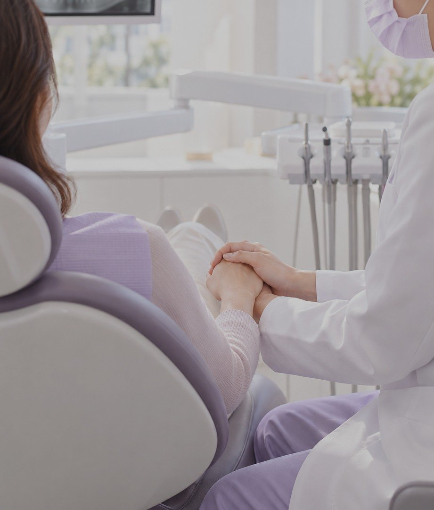
같은 원장의 1:1 진료
한 분 한 분의 입안 상태를 꼼꼼히 살펴
환자분께 꼭 맞는 1:1 진료를 차근차근 끝까지 해 드립니다.
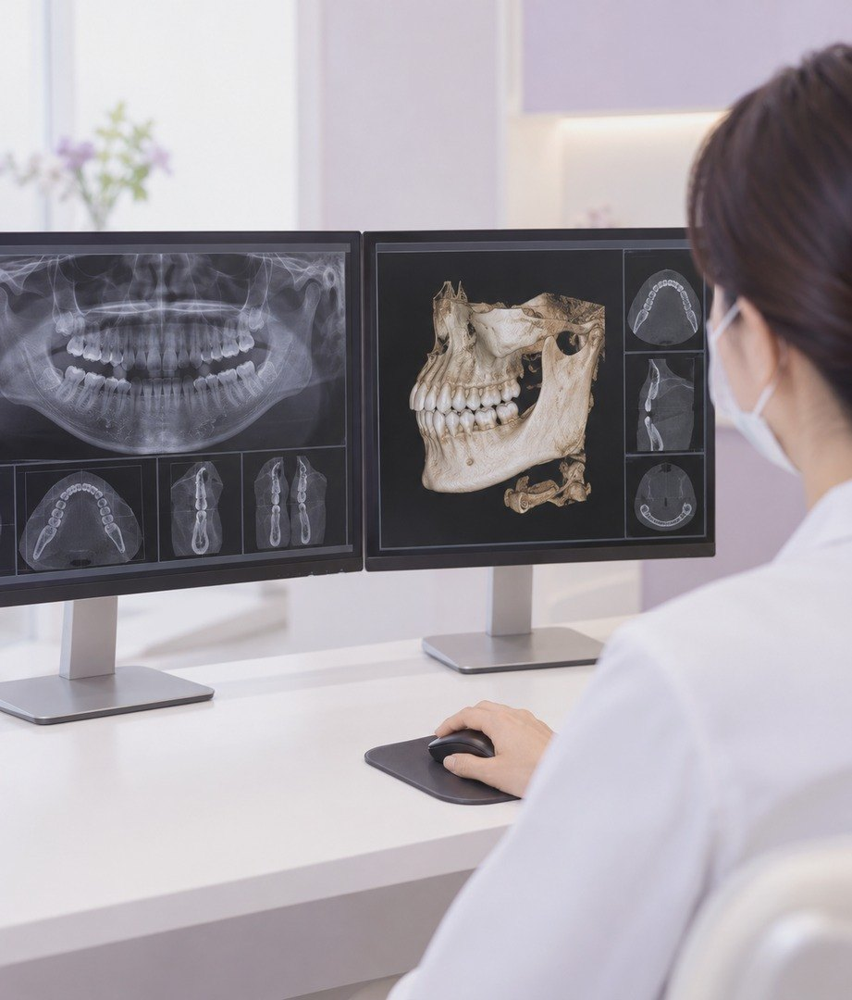
사진으로 함께 보는 꼼꼼한 검사
디지털 장비로 찍은 영상을 함께 보며 정확하게 진단하고,
결과까지 책임지고 진료합니다.
정해진 날짜에 다시 보는 점검
치료가 끝난 뒤의 관리 일정을 미리 함께 정하고,
정해진 날짜의 점검과 상담으로
빠르고 편안한 회복을 곁에서 돕습니다.
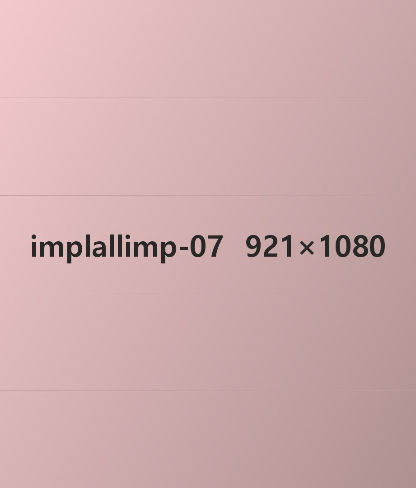
진료 보증 제도 운영
치료 뒤 진료보증서를 드리며,
정해진 사후 점검 일정에 따라
치료 결과를 끝까지 함께 지켜봅니다.
온새치과는 꼼꼼함과 진심으로
밝은 미소를 지켜 드립니다.
Keep your teeth Keep your smile
Keep your teeth Keep your smile 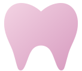
Keep your teeth Keep your smile
Keep your teeth Keep your smile